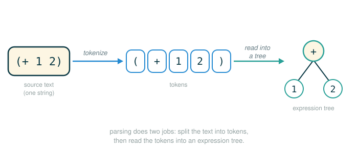

3.4.3 Parsing Expressions into Trees
The previous packet showed you the destination an interpreter wants to reach: a line of Calculator text on one side, and a Pair expression tree on the other.
Calculator text -> Pair expression treeThis packet explains how the interpreter gets from the text to the tree. That process is called parsing, and by the end you will be able to do four things: explain the two separate jobs parsing performs, read a tokenizer transcript and predict its token list, explain why the reader is recursive and what a buffer is for, and trace the official scheme_read and read_tail functions as they build a tree one token at a time.
One habit carries the whole lesson. When an expression looks complicated, you separate it into its smallest meaningful pieces, then handle one piece at a time. That is exactly what a parser does, and you will watch it do it.
Parsing as Sorting a Sentence Into Boxes
Imagine someone hands you this sentence:
Add two and three.You can read it because your brain silently separates it into meaningful pieces: the command, the first number, and the second number. You do that so fast it feels like one step, but it is really two. First you chop the stream of letters into words. Then you decide how those words relate to each other.
The same two steps drive a parser, which first tokenizes the source text and then reads those tokens into an expression tree.

An interpreter has to do both jobs explicitly, and it does not begin with meaning. It begins with raw characters. For Calculator, the characters might be:
(+ 2 3)The interpreter must first separate these characters into tokens:
( + 2 3 )Then it must assemble those tokens into a tree:
Pair('+', Pair(2, Pair(3, nil)))The first job is like chopping a sentence into words. The second job is like diagramming the sentence to show which word is the verb and which words are its objects. Neither job alone is enough. You need both.
The Two Jobs of Parsing
Here is the formal version. Parsing is the process of generating expression trees from raw text input. A parser is a composition of two components: a lexical analyzer and a syntactic analyzer.
First, the lexical analyzer partitions the input string into tokens, which are the minimal syntactic units of the language such as names and symbols. Second, the syntactic analyzer constructs an expression tree from this sequence of tokens. The sequence of tokens produced by the lexical analyzer is consumed by the syntactic analyzer.
| Job | Plain name | Input | Output |
|---|---|---|---|
| Lexical analysis | Tokenizing | A string of characters | A list of tokens |
| Syntactic analysis | Reading | A sequence of tokens | An expression tree |
Tokenizing does not yet understand the whole expression. It only identifies the pieces. Reading uses the grammar of the language to decide how those pieces fit together. Keep the two jobs separate in your mind, because the interpreter keeps them separate in its code: one module does the tokenizing, a different module does the reading.
Lexical Analysis: Tokenizing One Line
The component that interprets a string as a token sequence is called a tokenizer or lexical analyzer. In this implementation, the tokenizer is a function called tokenize_line.
Scheme tokens are delimited by white space, parentheses, dots, or single quotation marks. Delimiters are tokens, as are symbols and numerals. The tokenizer analyzes a line character by character, validating the format of symbols and numerals as it goes.
There is one detail that surprises beginners. Tokenizing a well-formed Calculator expression separates all symbols and delimiters, but it also identifies multi-character numbers (for example, 2.3) and converts them into numeric types. So a numeral does not stay a string. It becomes an actual Python int or float. Here is the official transcript:
>>> tokenize_line('(+ 1 (* 2.3 45))')
['(', '+', 1, '(', '*', 2.3, 45, ')', ')']Read the output carefully, because it contains three different kinds of token value mixed in one list:
['(', '+', 1, '(', '*', 2.3, 45, ')', ')']
├─ '(' ......... a parenthesis delimiter, kept as the string '('
├─ '+' ......... an operator symbol, kept as the string '+'
├─ 1 ......... a numeral, converted to the Python int 1
├─ '(' ......... a parenthesis delimiter, kept as the string '('
├─ '*' ......... an operator symbol, kept as the string '*'
├─ 2.3 ......... a numeral with a decimal point, converted to the Python float 2.3
├─ 45 ......... a numeral, converted to the Python int 45
├─ ')' ......... a parenthesis delimiter, kept as the string ')'
├─ ')' ......... a parenthesis delimiter, kept as the string ')'
└─ produces a flat list of tokens, with no nesting yetTwo things are worth pausing on. First, the parentheses became their own tokens. That matters enormously, because the parentheses are exactly the marks that will tell the reader where a combination starts and ends. Second, the output is flat. The nesting of the original expression has not been recovered yet. Tokenizing only separates pieces; it does not build structure. That is the next job.
Lexical analysis is an iterative process, and it can be applied to each line of an input program in isolation. You can tokenize line one, then tokenize line two, without knowing anything about how the two lines relate. Relating them is the reader's job, not the tokenizer's.
The Official Tokenizer Source
Here is the actual tokenize_line function, reproduced verbatim from the scheme_tokens module. You do not need to memorize it, but read it once so the transcript above stops being magic. Notice the block in the middle that tries int(text) first and falls back to float(text) — that is exactly where 2.3 and 45 get converted from strings into numbers.
# (1)
def tokenize_line(line):
"""The list of Scheme tokens on line. Excludes comments and whitespace."""
result = []
text, i = next_candidate_token(line, 0)
while text is not None:
if text in DELIMITERS:
result.append(text)
elif text == '+' or text == '-':
result.append(text)
elif text == '#t' or text.lower() == 'true':
result.append(True)
elif text == '#f' or text.lower() == 'false':
result.append(False)
elif text == 'nil':
result.append(text)
elif text[0] in _NUMERAL_STARTS:
try:
result.append(int(text))
except ValueError:
try:
result.append(float(text))
except ValueError:
raise ValueError("invalid numeral: {0}".format(text))
elif text[0] in _SYMBOL_STARTS and valid_symbol(text):
result.append(text)
else:
print("warning: invalid token: {0}".format(text), file=sys.stderr)
print(" ", line, file=sys.stderr)
print(" " * (i+3), "^", file=sys.stderr)
text, i = next_candidate_token(line, i)
return result
The companion function tokenize_lines applies tokenize_line to every line of an input, producing one token list per line:
# (2)
def tokenize_lines(input):
"""An iterator that returns lists of tokens, one for each line of the
iterable input sequence."""
return map(tokenize_line, input)
This is why a Calculator expression can be split across several lines and still parse: each line is tokenized independently, and the reader stitches the token lists back together.
Syntactic Analysis: Reading Tokens Into a Tree
The component that interprets a token sequence as an expression tree is called a syntactic analyzer. Syntactic analysis is a tree-recursive process, and it must consider an entire expression that may span multiple lines.
This analysis is implemented by the scheme_read function. It is tree-recursive because analyzing a sequence of tokens often involves analyzing a subsequence of those tokens into a subexpression, which itself serves as a branch (for example, an operand) of a larger expression tree. Recursion generates the hierarchical structures consumed by the evaluator.
In plain terms: a combination can contain another combination. So the procedure that reads a combination must be able to call itself to read the inner one. That is the whole reason recursion shows up here, and it is the same recursive idea from Chapter 1, except now the smaller problem is "read the next subexpression."
Reading Tokens With a Buffer
A reader needs to look at tokens one at a time without losing the tokens it has not consumed yet. It also needs those tokens to flow smoothly even when they arrived on different lines. The implementation handles both needs with a buffer.
The scheme_read function expects its input src to be a Buffer instance that gives access to a sequence of tokens. A Buffer collects tokens that span multiple lines into a single object that can be analyzed syntactically.
Think of a buffer as a queue at a theater, with a single attendant standing at the front:
front -> ( + 1 2 ) <- backThe reader only ever talks to the front of the queue, and it can ask the buffer two questions. What token is at the front right now? That is the current() method, which looks without removing. Give me the front token and advance. That is the pop() method, which removes the front token and returns it, so the next token becomes the new front. When the source is exhausted, both methods return None.
This is the key to handling nested expressions cleanly. Every recursive call shares the same buffer, so each call picks up exactly where the previous one left off. No call has to know which tokens the others already consumed; it just keeps asking the front of the queue.
Here is the official Buffer class, reproduced verbatim. The docstring transcript is itself an official example of how the two questions work — trace it slowly and watch the >> marker move to the current token.
# (3)
class Buffer(object):
"""A Buffer provides a way of accessing a sequence of tokens across lines.
Its constructor takes an iterator, called "the source", that returns the
next line of tokens as a list each time it is queried, or None to indicate
the end of data.
The Buffer in effect concatenates the sequences returned from its source
and then supplies the items from them one at a time through its pop()
method, calling the source for more sequences of items only when needed.
In addition, Buffer provides a current method to look at the
next item to be supplied, without sequencing past it.
The __str__ method prints all tokens read so far, up to the end of the
current line, and marks the current token with >>.
>>> buf = Buffer(iter([['(', '+'], [15], [12, ')']]))
>>> buf.pop()
'('
>>> buf.pop()
'+'
>>> buf.current()
15
>>> print(buf)
1: ( +
2: >> 15
>>> buf.pop()
15
>>> buf.current()
12
>>> buf.pop()
12
>>> print(buf)
1: ( +
2: 15
3: 12 >> )
>>> buf.pop()
')'
>>> print(buf)
1: ( +
2: 15
3: 12 ) >>
>>> buf.pop() # returns None
"""
def __init__(self, source):
self.index = 0
self.lines = []
self.source = source
self.current_line = ()
self.current()
def pop(self):
"""Remove the next item from self and return it. If self has
exhausted its source, returns None."""
current = self.current()
self.index += 1
return current
@property
def more_on_line(self):
return self.index < len(self.current_line)
def current(self):
"""Return the current element, or None if none exists."""
while not self.more_on_line:
self.index = 0
try:
self.current_line = next(self.source)
self.lines.append(self.current_line)
except StopIteration:
self.current_line = ()
return None
return self.current_line[self.index]
The two methods you will care about while tracing the reader are current() (look at the front) and pop() (take the front and advance). Everything else in the class is bookkeeping that lets those two methods work across multiple lines.
The Reader: scheme_read and read_tail
The reader is two functions that call each other. This is mutual recursion: scheme_read reads one expression, and when that expression is a list it hands off to read_tail, which in turn calls scheme_read to read each element. Here is the verbatim source for both.
# (4)
def scheme_read(src):
"""Read the next expression from src, a Buffer of tokens.
>>> lines = ['(+ 1 ', '(+ 23 4)) (']
>>> src = Buffer(tokenize_lines(lines))
>>> print(scheme_read(src))
(+ 1 (+ 23 4))
"""
if src.current() is None:
raise EOFError
val = src.pop()
if val == 'nil':
return nil
elif val not in DELIMITERS: # ( ) ' .
return val
elif val == "(":
return read_tail(src)
else:
raise SyntaxError("unexpected token: {0}".format(val))
def read_tail(src):
"""Return the remainder of a list in src, starting before an element or ).
>>> read_tail(Buffer(tokenize_lines([')'])))
nil
>>> read_tail(Buffer(tokenize_lines(['2 3)'])))
Pair(2, Pair(3, nil))
>>> read_tail(Buffer(tokenize_lines(['2 (3 4))'])))
Pair(2, Pair(Pair(3, Pair(4, nil)), nil))
"""
if src.current() is None:
raise SyntaxError("unexpected end of file")
if src.current() == ")":
src.pop()
return nil
first = scheme_read(src)
rest = read_tail(src)
return Pair(first, rest)
Here is what each function is responsible for, in words.
The scheme_read function first checks for various base cases, including empty input (which raises an end-of-file exception, called EOFError in Python) and primitive expressions. A recursive call to read_tail is invoked whenever a ( token indicates the beginning of a list. In other words, scheme_read reads exactly one thing: if that thing is a number or symbol, it returns it directly; if that thing is an opening parenthesis, it knows a list has begun and delegates the rest to read_tail.
The read_tail function continues to read from the same input src, but expects to be called after a list has begun. Its base cases are an empty input (an error) or a closing parenthesis that terminates the list. Its recursive call reads the first element of the list with scheme_read, reads the rest of the list with read_tail, and then returns a list represented as a Pair.
That last sentence is the heart of the recursion. read_tail builds a list by reading one element (first = scheme_read(src)), reading the entire remaining tail (rest = read_tail(src)), and joining them with Pair(first, rest). If one of those elements is itself a parenthesized combination, scheme_read will recurse into read_tail again for it. This is how nested structure gets rebuilt from a flat token stream.
This implementation of scheme_read can read well-formed Scheme lists, which are all we need for the Calculator language. Parsing dotted lists and quoted forms is left as an exercise.
Anatomy of the Reader's Central Line
The single line where the structure-building happens is the last line of read_tail. Walk it token by token:
return Pair(first, rest)
├─ return ........ hand a value back to whoever called read_tail
├─ Pair ........ the two-field constructor that links one element to the rest
├─ ( ........ begins the constructor's arguments
├─ first ........ the element just read by scheme_read (one whole subexpression)
├─ , ........ separates the two arguments
├─ rest ........ the entire remaining tail, just read by a recursive read_tail
├─ ) ........ ends the constructor's arguments
└─ builds one node of the expression tree: this element, then the restReading first may have consumed a single token (a number) or many tokens (a whole nested combination). Either way, by the time this line runs, first is one complete subexpression and rest is the complete remainder. The Pair glues them into the tree.
Progressive Examples
Warm-Up: Reading the Smallest List
Start with the simplest complete expression:
(+ 1 2)After tokenizing, the buffer holds this flat sequence:
( + 1 2 )The buffer is like a bookmark that always points to the next unread token. The reader does not reread the whole line each time; it consumes one token, and the bookmark moves forward. Here is the front of the buffer at each step, alongside what the reader does:
Front token (current) Reader action
------------------------------------------------------------
( scheme_read pops "(", so a list begins; calls read_tail
+ read_tail calls scheme_read, which pops and returns "+"
1 read_tail calls scheme_read, which pops and returns 1
2 read_tail calls scheme_read, which pops and returns 2
) read_tail pops ")", so the list ends; returns nilWorking the Pair(first, rest) joins back up from the inside out gives the completed tree:
Pair('+', Pair(1, Pair(2, nil)))Nothing has been evaluated yet. The reader has not added 1 and 2. It has only built a structured representation that says: this is a call expression whose operator is '+' and whose operands are 1 and 2. Turning that tree into the value 3 is a separate stage, covered in the next packet.
Bridge: read_tail on a Bare Tail
The official read_tail docstring includes a transcript that lets you see read_tail in isolation, starting from tokens that are already inside a list (note there is no leading ():
>>> read_tail(Buffer(tokenize_lines(['2 3)'])))
Pair(2, Pair(3, nil))Read this as: the tail begins with 2, then 3, then a closing parenthesis. read_tail reads 2 as the first element, recursively reads the rest, finds 3 as the next element, recursively reads again, hits ) which terminates the list as nil, and joins everything into Pair(2, Pair(3, nil)). The empty case and the nested case from the same docstring round out the picture:
>>> read_tail(Buffer(tokenize_lines([')'])))
nil
>>> read_tail(Buffer(tokenize_lines(['2 (3 4))'])))
Pair(2, Pair(Pair(3, Pair(4, nil)), nil))In the last one, the second element is itself a list (3 4), so scheme_read recurses into a fresh read_tail to build Pair(3, Pair(4, nil)) before that whole sub-list becomes the first field of the outer Pair.
The Official Multi-Line Example, Verbatim
Now the example exactly as the source presents it. The input is one expression split across two physical lines, which is precisely the case the Buffer was built to handle:
>>> lines = ['(+ 1', ' (* 2.3 45))']
>>> expression = scheme_read(Buffer(tokenize_lines(lines)))
>>> expression
Pair('+', Pair(1, Pair(Pair('*', Pair(2.3, Pair(45, nil))), nil)))
>>> print(expression)
(+ 1 (* 2.3 45))The text is split across two lines, but the reader builds one expression tree, equivalent to this single-line Scheme expression:
(+ 1 (* 2.3 45))Three things to notice in the output. The decimal 2.3 became a Python float, and the integer 45 became a Python int — that conversion happened back in the tokenizer, not the reader. The operators stayed symbols, represented by the strings '+' and '*'. And the second operand of + is not a number at all; it is the entire nested tree Pair('*', Pair(2.3, Pair(45, nil))), which is exactly what recursion produced. The two expression views differ on purpose: the bare expression shows the Pair constructor form, while print(expression) shows the Scheme-readable form (+ 1 (* 2.3 45)).
Step-by-Step Parse Trace
Here is the full recursion for the official expression, written as a call tree. Indentation shows which call is nested inside which, and every leaf is a token the reader popped from the shared buffer. The buffer starts as:
( + 1 ( * 2.3 45 ) )The calls unfold like this:
scheme_read pops "(", begins a list, calls read_tail
read_tail front is "+", not ")", so read an element
scheme_read pops "+", returns the symbol '+' -> first
read_tail front is 1, not ")", so read an element
scheme_read pops 1, returns the int 1 -> first
read_tail front is "(", not ")", so read an element
scheme_read pops "(", begins a sub-list, calls read_tail
read_tail front is "*", read an element
scheme_read pops "*", returns the symbol '*' -> first
read_tail front is 2.3, read an element
scheme_read pops 2.3, returns the float 2.3 -> first
read_tail front is 45, read an element
scheme_read pops 45, returns the int 45 -> first
read_tail front is ")", pop it, return nil -> rest
joins: Pair(45, nil)
joins: Pair(2.3, Pair(45, nil))
joins: Pair('*', Pair(2.3, Pair(45, nil)))
the sub-list value is Pair('*', Pair(2.3, Pair(45, nil))) -> first
read_tail front is ")", pop it, return nil -> rest
joins: Pair(Pair('*', Pair(2.3, Pair(45, nil))), nil)
joins: Pair(1, Pair(Pair('*', Pair(2.3, Pair(45, nil))), nil))
joins: Pair('+', Pair(1, Pair(Pair('*', Pair(2.3, Pair(45, nil))), nil)))The final joined value is the tree the transcript showed:
Pair('+', Pair(1, Pair(Pair('*', Pair(2.3, Pair(45, nil))), nil)))Two observations make this trace worth the space. Every call consumes exactly the tokens that belong to its own subexpression and no more, because all calls share one buffer and each pop advances the single bookmark. And the tree is assembled from the inside out: the deepest Pair(45, nil) is built first, and the outermost Pair('+', ...) is built last, even though the reader encountered + first. Recursion lets the reader hold the outer combination open while it finishes the inner one.
Syntax Errors During Parsing
A parser is also responsible for rejecting text that does not match the grammar. Informative syntax errors improve the usability of an interpreter substantially. The SyntaxError exceptions that are raised include a description of the problem encountered.
You can see both error paths directly in the source. In scheme_read, a token that is a delimiter but is not an opening parenthesis (for instance, a stray )) falls to the final branch:
# (5)
else:
raise SyntaxError("unexpected token: {0}".format(val))
A bare closing parenthesis with no matching opener is exactly this case:
)In read_tail, running out of tokens before a list is closed hits its own guard:
# (6)
if src.current() is None:
raise SyntaxError("unexpected end of file")
An opening parenthesis with no matching closer triggers that path, because the reader keeps asking for the next element and the buffer eventually returns None:
(+ 1 2There is also an end-of-input case that is not an error in the same sense. If scheme_read is asked to read when the buffer is already empty, it raises EOFError, which the read loop treats as a clean signal that the user is done rather than as a mistake.
The machine model for the missing-parenthesis case is:
read_tail expects another token
the buffer returns None
read_tail raises SyntaxError("unexpected end of file")
the read loop catches the error and reports itThe point to hold onto: a missing parenthesis is a parsing problem, caught while building the tree. It is a different kind of failure, at a different stage, from an error like division by zero, which can only happen later, during evaluation.
⚠Common Beginner Traps
- Thinking tokenizing and parsing are the same job. Tokenizing splits text into pieces; parsing decides how those pieces fit into a tree. They live in different modules for a reason.
- Forgetting that parentheses are tokens. The reader needs
(and)as their own tokens because they mark where combinations begin and end. Strip them and the structure is lost. - Expecting the token list to be nested. The tokenizer output is flat. The nesting is rebuilt later by the recursion in
scheme_readandread_tail, not by the tokenizer. - Reading nested expressions left to right without recursion. The reader must finish one complete subexpression before returning to the outer one. A flat loop produces a flattened, wrongly shaped tree: an inner combination like
(* 2.3 45)ends up as separate siblings instead of one nestedPairoperand. - Forgetting that the buffer changes as the reader reads. Every
popadvances the single shared bookmark. That shared state is how the calls coordinate; without it, two calls would read the same token. - Treating a syntax error as an evaluation error. A missing parenthesis is caught during parsing. Division by zero is caught during evaluation. They happen at different stages.
- Thinking parsing computes the answer. Parsing only builds an expression tree. Reading
(+ 1 2)producesPair('+', Pair(1, Pair(2, nil))), not3. Evaluation is the later stage that turns the tree into a value.
✓Check Your Understanding
- What are the two jobs of parsing, and which one produces the token list?
- In
tokenize_line('(+ 1 (* 2.3 45))'), why are1,2.3, and45not strings in the output, while'+'and'('are? - Why is the tokenizer's output flat rather than nested?
- What two questions can the reader ask the buffer, and which one advances past a token?
- In
read_tail, what does the linereturn Pair(first, rest)accomplish, and where dofirstandrestcome from? - What expression tree does
(* 4 (+ 5 6))parse to? - What kind of error should
(+ 1 2produce, and at which stage is it caught? - Does parsing
(+ 1 2)compute3? Why or why not?
Show the answers
- Lexical analysis (tokenizing) and syntactic analysis (reading). Tokenizing produces the token list; reading consumes that list to build the tree.
- The tokenizer converts well-formed numerals into Python numeric types, so
1and45becomeintand2.3becomesfloat. Operator symbols and delimiters are not numerals, so they stay as the strings'+'and'('. - Tokenizing only separates characters into pieces; it does not interpret structure. Rebuilding the nesting is the reader's job, done with recursion.
current()looks at the front token without removing it, andpop()returns the front token and advances.pop()is the one that advances.- It builds one node of the expression tree, joining the element just read to the rest of the list.
firstis the value returned byscheme_read(one whole subexpression) andrestis the value returned by the recursiveread_tailcall (the entire remaining tail). Pair('*', Pair(4, Pair(Pair('+', Pair(5, Pair(6, nil))), nil))). The first element is the symbol'*', and the second operand is itself the nested treePair('+', Pair(5, Pair(6, nil))).- A
SyntaxError(the source reports "unexpected end of file"). It is caught during parsing, whileread_tailis still trying to build the list, before any evaluation happens. - No. Parsing produces the tree
Pair('+', Pair(1, Pair(2, nil))). Evaluation is a separate later stage that applies+to compute3.
§Summary
Parsing turns program text into structured data, and it does so in two distinct jobs. First, lexical analysis (tokenizing) separates a string of characters into a flat list of tokens, with tokenize_line keeping delimiters and symbols as strings while converting numerals into Python numbers. Second, syntactic analysis (reading) consumes that token sequence and builds an expression tree, implemented by the mutually recursive scheme_read and read_tail functions operating over a shared Buffer. The reader is recursive because a combination can contain another combination, and the Pair(first, rest) line in read_tail is where each tree node is assembled from one element and the rest of the list. Parentheses guide the reader by marking where combinations begin and end, and missing parentheses are reported as syntax errors at this stage, distinct from the evaluation errors that come later. Crucially, parsing builds the tree but computes nothing; turning the tree into a value is the next stage.
▶Step-Through Checkpoint
The block below is this lesson's capstone: a self-contained slice of the reader machinery, with a tiny Pair, a tiny nil, and the same recursive scheme_read / read_tail control flow as the official source, but reading from a plain Python list of tokens so it runs with no other modules. Here nil is faked as the string "nil" only so the snippet needs no other modules; the real nil is the class instance from the previous packet, which is why the final tree below shows it quoted as 'nil'.
Stepping through it draws the environment diagram the reader is really building. Each scheme_read and read_tail call gets its own frame. Every frame shares the single tokens list object on the heap and shrinks it with pop(0). And the Pair objects link up into the nested tree that the deepest frames return first and the outermost frame returns last. Before you step through it, write down three predictions: how many read_tail frames will open over the whole run, what sits at the front of tokens at the moment the inner (* 2 3) call returns its finished Pair, and what remaining holds when the last line runs. Don't worry about getting all three predictions right — they're just a way to check your understanding as you step through.
# (7)
class Pair:
def __init__(self, first, second):
self.first = first
self.second = second
def __repr__(self):
return "Pair({0}, {1})".format(repr(self.first), repr(self.second))
nil = "nil"
def scheme_read(tokens):
if len(tokens) == 0:
raise EOFError
val = tokens.pop(0)
if val == "(":
return read_tail(tokens)
if val == ")":
raise SyntaxError("unexpected token: )")
return val
def read_tail(tokens):
if len(tokens) == 0:
raise SyntaxError("unexpected end of file")
if tokens[0] == ")":
tokens.pop(0)
return nil
first = scheme_read(tokens)
rest = read_tail(tokens)
return Pair(first, rest)
tokens = ["(", "+", 1, "(", "*", 2, 3, ")", ")"]
tree = scheme_read(tokens)
remaining = tokens
Step through it one line at a time and check each prediction as the frames open and close. Every call removes tokens from the front of the one shared list, and eight read_tail frames open in all, one for each tail the reader still has to finish. When the inner (* 2 3) returns its Pair, the outer call resumes with the closing parenthesis still waiting at the front, and once that final token is consumed, remaining is bound to the now-empty list. The final tree is Pair('+', Pair(1, Pair(Pair('*', Pair(2, Pair(3, 'nil'))), 'nil'))), the same inside-out shape the official reader produces.